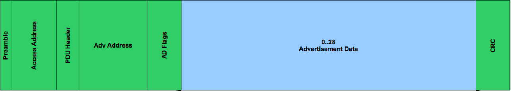
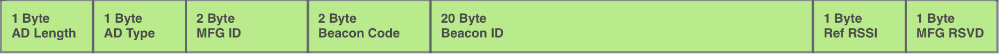
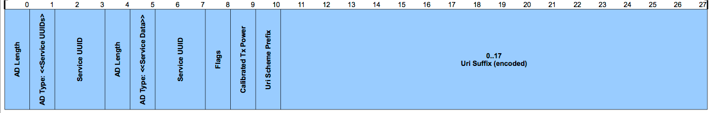
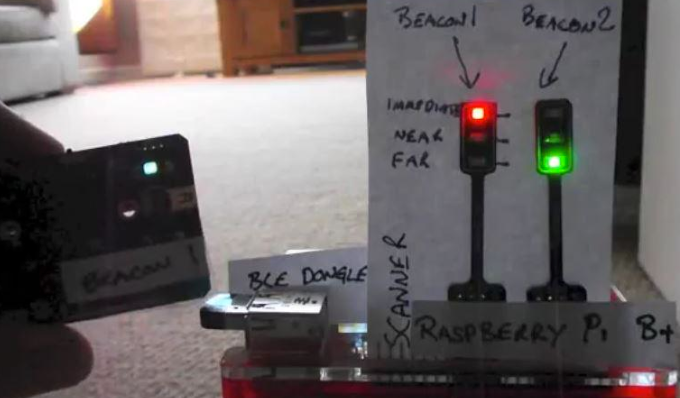

Bluetooth Beacons
Barry Byford
@uk_baz
The Technology
Bluetooth Low Energy (BLE), officially known as "Bluetooth Smart"
A light-weight subset of classic Bluetooth introduced as part of the Bluetooth 4.0 specification
Beacons
Uses BLE's peripheral advertising feature
Transmit only
Contains small amount of information

Recieve Strength Signal Indicator (RSSI)
RSSI is the strength of the beacon's signal as seen on the receiving device
RSSI is noisy
|
|
|
iBeacon
Apple’s iBeacon was the first BLE Beacon technology to hit the headlines.
The iBeacon is a proprietary, closed standard.
Details available after signing Apple’s developer license.
altBeacon
AltBeacon is a free open-specification for beacons designed by Radius Networks.
The AltBeacon has similar functionality as that of an iBeacon and seems to be a direct response to the closed source iBeacon spec
It looks to be gaining some momentum although it is not that widely supported yet

uriBeacon
(pronounced YUR-ee-BEE-kun)
The UriBeacon Specification is designed with the goal of:
Create the easiest, most open way to discover and use nearby smart things
Beacon payload is an URI (either URL or URN)

https://github.com/google/uribeacon/tree/master/specification
uriBeacon appears to offer most
- Open standard
- Flexible payload
- Can be useful without custom native app
- Example code on GitHub
var UriBeaconScanner = require('uri-beacon-scanner');
UriBeaconScanner.on('discover', function(uriBeacon) {
console.log('discovered UriBeacon:');
console.log(' uri = ' + uriBeacon.uri);
console.log(' flags = ' + uriBeacon.flags);
console.log(' TX power = ' + uriBeacon.txPower);
console.log(' RSSI = ' + uriBeacon.rssi);
console.log();
});
UriBeaconScanner.startScanning();
https://github.com/google/physical-web/blob/master/nodejs/basic-scanner.js
So what can I do with them?
- Fancy QRcode/NFC
- broadcasting URL's of nearby smart device
- Proximity tracking
Extra hardware for Raspberry Pi
You'll need a Bluetooth v4.0 dongle

Pi can be scanner or beacon
Software on the Pi
- bluez
- node.js
- uri-beacon-scanner
- onoff.js
Blesh Beacons
Scott Jenson
Truth Labs
Live Demo

Summary
uriBeacon has the best support